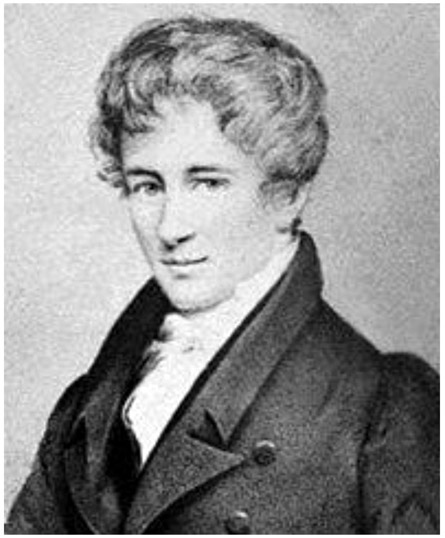
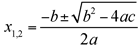

Niels Henrik Abel: Norwegian (1802–1829)
Norway is one of the wealthiest countries in the world. It has extensive natural resources and, on a per-capita basis, Norway is the world’s largest producer of oil and natural gas outside the Middle East. In contrast to most other countries in the world, Norway has no foreign debt; the state revenues generated from the petroleum industry even allowed the government to establish a sovereign wealth fund, which, by 2017, has accumulated a value of $185,000 for each citizen.1 Public healthcare and public education are virtually free, which are probably two reasons why Norway ranked first in the 2017 World Happiness Report of the United Nations.2 While Norway is obviously a very good place to live in this day and age, and it attracts immigrants from all over the world, the situation was very different at the beginning of the nineteenth century. Frequent famines, induced by climatic extremes during the Little Ice Age, had led to great loss of life. For more than four hundred years, Norway had been trapped in an unequal union with Denmark and was essentially controlled by the Danish authorities in Copenhagen.
During these difficult times, Niels Henrik Abel was born in a small village on the West Norwegian coast on August 5, 1802. Niels was the second of seven children of Anne Marie Simonsen and Sören Georg Abel, a pastor. Political conflicts between Denmark and Britain, which had already precipitated the First Battle of Copenhagen in 1801, made the situation for the Norwegian population even worse in 1807, when Denmark entered into an alliance with Napoleon and the British fleet reacted by imposing a blockade

Figure 31.1. The only contemporary portrait of Niels Henrik Abel, painted by Johan Gørbitz in 1826.
on supply lines between Denmark and Norway. For several years, Norway was able to neither export nor import goods to and from the continent, which led to a severe economic crisis that culminated in mass starvation in 1812. Since Abel’s parents could not afford to send their children to school, he was educated at home by his father, who had a degree in philology and theology. Records suggest that the difficulties of a childhood in a poor household were exacerbated by alcohol abuse of both parents.3 However, fortunately, the general economic situation became slightly better when the Napoleonic Wars came to an end and Denmark lost its power over Norway. Norway took a chance and declared independence in 1814. At the age of thirteen, Abel entered the Cathedral School in Christiana (now Oslo). He soon wrote home that he “felt right in his element,”4 yet he achieved only moderately satisfactory marks in his first year at school. In the nineteenth century, school corporal punishment was an accepted method of behavior management, and student injuries caused by physical punishment were not uncommon. Abel’s mathematics teacher was dismissed in 1817 because he had beaten a student so hard that the student died eight days afterward.5 Fortunately, the new mathematics teacher, Bernt Holmboë (1795–1850), who was only seven years older than Abel, recognized his student’s great talent for and fascination with mathematics and began to mentor him. He encouraged him to study university-level books outside the school curriculum, and together they read the works of Leonhard Euler, Isaac Newton, Jean le Rond d’Alembert, Joseph-Louis Lagrange, and Pierre Simon Laplace. When Abel’s father lost his job in 1818, he started drinking excessively, and he died two years later. His death dramatically increased the family’s financial problems and put an additional burden on Abel, who was now responsible for his mother and his siblings, since his elder brother slipped into depression and could not support the family. Without the help of Holmboë, it would not have been possible for Abel to continue his education. Holmboë raised funds for Abel that allowed him to finish school and then enter the University of Christiania in the fall of 1821. In a report, Holmboë wrote about his gifted student:
With the most incredible genius he unites ardor for and interest in mathematics such that he quite probably, if he lives, shall become one of the great mathematicians.6
The University of Christiania was founded in 1813, and initially it did not offer any studies in the natural sciences; its focus lay in the profession-oriented studies: theology, medicine, and law.7 Already, as a freshman, Abel was one of the best mathematicians in the country. During his last year in school, he had begun pursuing his own mathematical ideas; in particular, he was interested in solving quintic equations, a major unresolved mathematics problem at that time. Quintic equations are equations of the form ax5 + bx4 + cx3 + dx2 + ex + f = 0, that is, polynomial equations in which 5 is the highest power of x occurring in the equation. Here, the coefficients a, b, c, d, e, and f represent real numbers, and x is the unknown quantity. You may recall that the roots of a quadratic equation ax2 + bx + c = 0 can be obtained by the formula

.For cubic and quartic equations there exist similar, albeit much more complicated, formulas. The first explicit formula for the solution of a general quadratic equation is attributed to the Indian mathematician Brahmagupta (598–ca. 668 CE). The formulas for cubic and quartic equations were developed by the Italian mathematicians Scipione del Ferro (1465–1526) and Lodovico de Ferrari (1522–1565) and were first published in a book by another Italian mathematician, Gerolamo Cardano (1501–1576). However, the problem of solving quintic equations of the most general form had occupied mathematicians for hundreds of years, and none of them had been successful. In 1821, Abel believed that he had solved the problem in full generality; he sent a paper to Ferdinand Degen (1766–1825) in Copenhagen, the leading mathematician of the northern countries at that time. Upon Degen’s request to provide a numerical example of his method, Abel discovered a mistake. However, Degen noticed the brilliancy in Abel’s mathematical reasoning and advised him to make use of his abilities in other areas of mathematics as well.
After one year at the university, Abel’s grades were not very outstanding, except for mathematics, where he excelled. Since there were no advanced study programs other than theology, medicine, and law, Abel had to study mathematics entirely on his own by borrowing mathematics books from the library. He read all of the mathematical texts he could find. There were only two mathematics professors at the university, and they soon realized that Abel would have to go abroad for any further study. In 1823, they financed a trip to Copenhagen so that he could visit the mathematicians there. However, it turned out that he already knew everything they had shown him. At a ball in Copenhagen, Abel met Christine Kemp (1804–1862) who became his fiancée one year later and subsequently followed him to Norway, where she found a job as a governess. Meanwhile, Abel had published several papers on topics in advanced calculus in a new scientific journal founded by one of his professors. He took up his work on quintic equations again, using a different approach, and eventually he solved the centuries-old problem, yet in a very surprising way. He proved that there exists no algebraic solution of a general polynomial equation of degree 5 or higher; that is, he determined that it is impossible to express the solutions in terms of the coefficients of the equation—as was done with other higher-degree equations. Solutions do exist, but they can be calculated only by approximation methods; it is, in general, not possible to “solve for x,” if the equation is of fifth or a higher degree. This important result is now known as the Abel-Ruffini theorem, since Paolo Ruffini (1765–1824) had published an incomplete proof in 1799. In order to do his proof, Abel developed (independent of Évariste Galois [see chap. 32]) the branch of mathematics known today as group theory. There is also a type of group named for Abel; the abelian group is one that aligns with the commutative property; in other words, the order of operations is irrelevant for the abelian group.
Abel applied for funding to travel to the centers of mathematics in France and Germany, but he received only a small stipend to learn the languages, with a promise that he would then receive a travel grant two years later. To have an impressive piece to his name in anticipation of his visit with the great mathematicians in Europe, he published at his own expense his work on equations of fifth-degree. He wrote the text in French to reach a larger audience, while at the same time shortening the proof as much as he could, to save printing costs. He sent the work to several mathematicians on the Continent, including Carl Friedrich Gauss (1777–1855), but the extremely condensed style of his writing made the proof very hard to read, and so his work did not receive the attention he had hoped for. Having gained a good knowledge of French and German, Abel felt well prepared for his trip to Europe, and he wrote a personal letter to the king of Norway to obtain the travel grant earlier. With a scholarship from the Norwegian government, he was able to start his journey to the Continent in the fall of 1825. Although the plan was to go to Göttingen to visit Gauss and then to visit the French Academy of Sciences in Paris (the world’s center of mathematics at that time), Abel first went to Berlin. There, he met August Leopold Crelle (1780–1855), an engineer and mathematician with good contacts to the government and who had long been planning to found a German mathematics journal to challenge the dominance of the well-established French journals. Crelle encouraged Abel to write an expanded and more accessible version of his results on quintic equations, a masterpiece of mathematics he eagerly wanted to publish in his journal. The first issue of Crelle’s Journal für die reine und angewandte Mathematik (Journal of Pure and Applied Mathematics) appeared in February 1826 and contained seven papers by Abel, who was also a principal contributor to the following issues. The high quality and importance of Abel’s papers were essential to establish the journal’s reputation. Today, Crelle’s journal is still one of the most renowned journals of mathematics. Abel abandoned his plans to visit Gauss, when he was informed that Gauss didn’t approve of his work. (Yet Gauss had actually never read Abel’s work on the quintic equation, as it was discovered unopened after Gauss’s death.)
When Abel came to Paris, he completed a large manuscript, which he considered to be his most impressive work so far, containing a whole new theorem on the addition of algebraic differentials with fundamentally new insights. He submitted it to the French Academy of Sciences for publication, and hoped that this publication in one of the most important journals of mathematics would make a strong-enough impression on the authorities in Norway to create a position for him at the university in Oslo. Augustin-Louis Cauchy (1789–1858) and Adrien-Marie Legendre (1752–1833) were appointed as referees. Abel spent the winter in Paris, awaiting an answer, but Cauchy had set the manuscript aside and forgotten about it. With almost no money left, eating only one meal per day, Abel’s health deteriorated. He developed a fever and a cough but kept on working at an enormous pace, writing further papers for Crelle’s journal. Although he frequented science circles in Paris and made the acquaintance of the leading mathematicians there, they had little interest in his work, and he never really had the opportunity to discuss his mathematical ideas with them. Many years later, the mathematician Joseph Liouville (1809–1882), who was a student when Abel visited Paris, said that meeting Abel without getting to know him was one of the greatest mistakes of his life. In spite of having published a number of papers in Crelle’s journal, Abel’s trip to Europe was a disappointment for him, and he became homesick.
Upon his return to Norway in 1827, he was rather depressed and poor. Without publishing in Paris, and having been unable to make contact with Gauss, he found that his grant was not renewed. He had to take a private loan to clear the debts of his family. He placed advertisements in newspapers as a private tutor, seeking to earn some money. Meanwhile, he continued to send papers to his friend Crelle at an incredible rate—most of them pioneering works in different fields of mathematics. Crelle tirelessly tried to use his influence to create a permanent position for Abel at the University of Berlin. In the spring of 1828, as Abel’s financial situation improved, he obtained a temporary position as a lecturer at the university in Oslo, substituting for a professor who went on a scientific expedition to Siberia. Although his publications in Crelle’s journal became increasingly more favorably recognized by the mathematicians in the French Academy, there was still no hope for a permanent position in Norway. His health condition had not really improved since he had left Paris, and it worsened in the fall of 1828. He wanted to spend Christmas with his fiancée, who worked as a governess in Froland, a district more than 250 kilometers from Oslo. Abel had to travel by sled in the bitter, cold Norway winter, which would have been an extremely exhausting trip even for a strong and healthy person. When he arrived, he was seriously ill. At Christmas, he felt a little better and could enjoy the celebration, but soon he was bedridden again, becoming weaker and weaker. Fearing that his greatest work, the paper submitted to the French Academy, had been lost forever, Abel invested all of his remaining physical energy to write down the proof of the main theorem on the addition of algebraic differentials again. After a violent hemorrhage, Abel was diagnosed with tuberculosis, from which he had probably been suffering since his earlier stay in Paris. He died on April 6, 1829, at the age of twenty-six. Two days later, not aware of Abel’s death, Crelle sent a joyful letter to Abel to tell him that a permanent position as a full professor was awaiting him at the University of Berlin. He wrote:
As far as your future is concerned, you can now be completely at ease. You belong among us and are secure. . . . You will be coming to a good country, to a better climate, closer to science and to sincere friends who appreciate you and are fond of you.8
One year later, Abel was posthumously awarded the Grand Prix of the French Academy of Sciences for his outstanding achievements in mathematics. After intensive searching, Cauchy finally found Abel’s monumental “Paris memoir,” which was then first published in 1841; it still stands as a milestone in the development of mathematics. In his short and tragic life, Niels Henrik Abel made deep and influential mathematical discoveries. Several mathematical theorems, equations, and objects bear his name; even a crater on the moon was named after Abel. When the Norwegian mathematician Sophus Lie (1842–1899) learned that Alfred Nobel’s plans for annual prizes would not include a prize in mathematics, he proposed creating an Abel Prize for outstanding achievements in mathematics, to be awarded annually, beginning in 1902. However, with Lie’s death in 1899, the motor behind these plans was gone and, also for financial reasons, the government decided to erect an Abel monument instead of funding an Abel Prize. In the late 1960s, oil exploration in the North Sea started and Norway’s Oil Age began, turning it into one of the wealthiest countries in the world by the end of the millennium. With money in abundance from the oil industry and with the 200th anniversary of Abel’s birth approaching, the Norwegian government finally established the Abel Prize in 2001. The Abel Prize was awarded with prize money amounting to 6 million Norwegian kroner (approximately $750,000). Together with the Fields Medal, the Abel Prize is viewed as the highest honor a mathematician can receive.